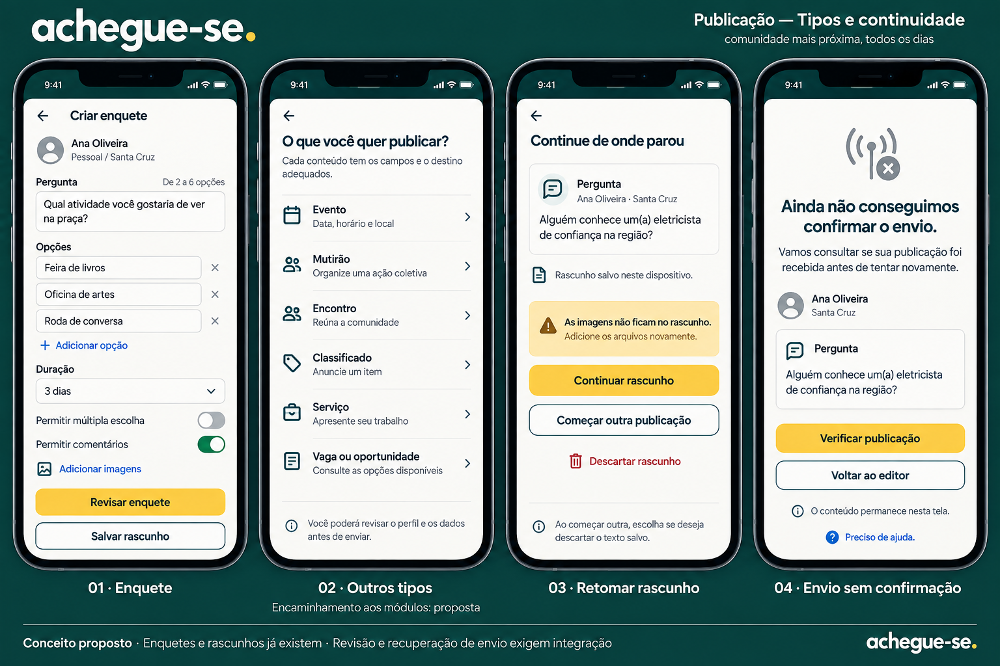
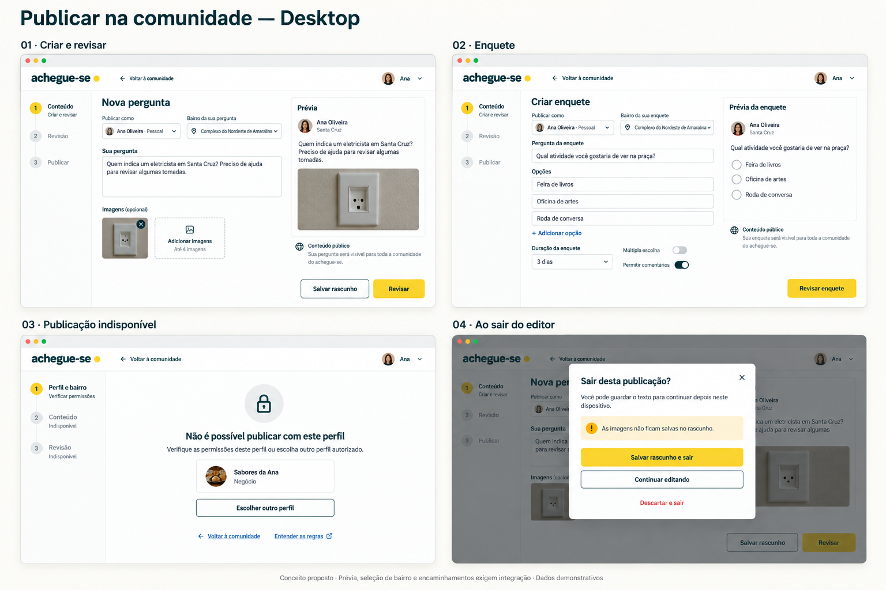
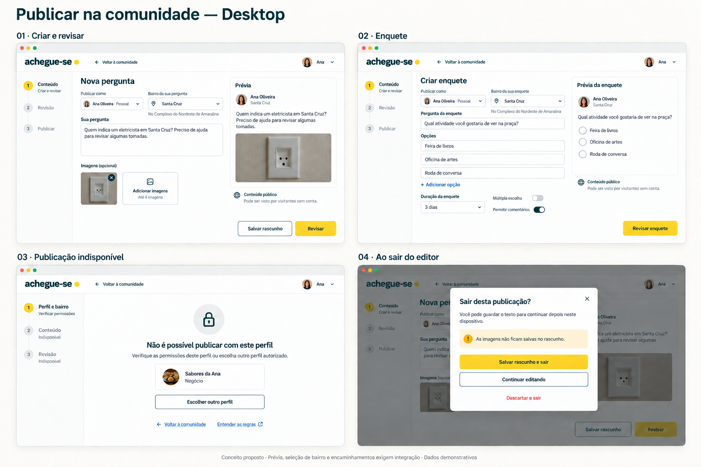
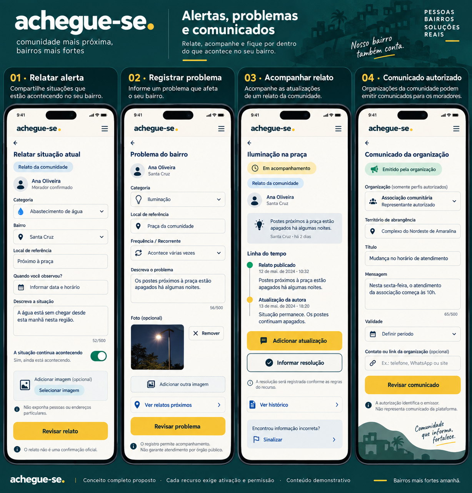
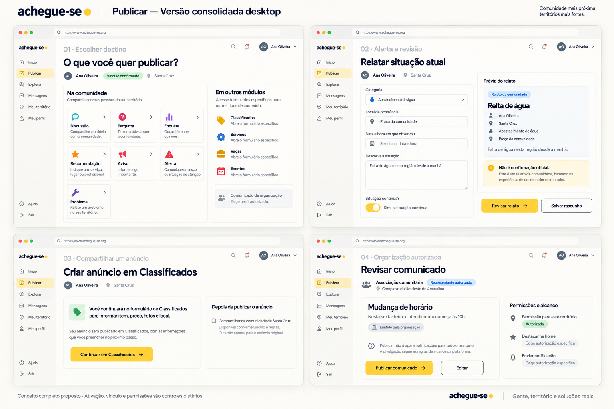

← Catálogo Publicar na comunidade Publicação, perfis, território, enquete, alertas e comunicados. Serviços/classificados/vagas encaminham ao módulo próprio. Versões 79–82 são histórico anterior à consolidação de permissões.
Documento da página · Registro da revisão
079-publicar-mobile-inicial · Histórico — não aplicar automaticamente 
080-publicar-tipos-estados · Histórico — não aplicar automaticamente 
081-publicar-desktop-inicial · Histórico — não aplicar automaticamente 
082-publicar-desktop-revisao · Histórico — não aplicar automaticamente 086-publicar-consolidado-mobile · Referência para revisão 
087-alertas-problemas-comunicados · Referência para revisão 
088-publicar-consolidado-desktop · Referência para revisão